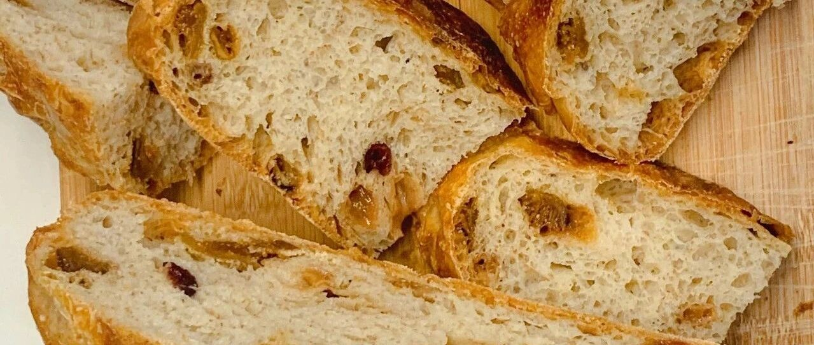

【视频】铸铁锅果干硬欧包
这周要去朋友家做客，她是健身达人。另外我也上了一段时间瑜伽课，也想给瑜伽老师带点啥。对她们这些健身达人来说，没有什么比无糖无油的铸铁锅硬欧包更好的礼物了！（这么说，也着实有点悲凉感啊！）
上次的这个方子，大家都说我跳跃的太厉害，图片从面团直接就到面包了。。。也确实有点不像话。好多朋友在后台强烈让我出视频，我也想这事儿，也应该正儿八经一点。所以就用了架子，好好调整了像素，找了专业一点剪辑软件，咱们就从这个特别简单的，无需厨师机的方子开始。【当然，铸铁锅也只是锦上添花罢了。】
上次的文章看这里 🔽
铸铁锅果干硬欧包
水星婆婆，公众号：水星婆婆最简单的铸铁锅硬欧包
引用的文章里面有铸铁锅和水量的说明，这里再把方子放一下。

请务必全屏观看！这次用了企鹅号上传，画质总算可以了。
上次做了这个方子以后，我非常喜欢，后面做了多次，就忍不住入手了一个22cm的铸铁锅。怎么说呢？就是还行。哈哈哈哈。我买的曼食曼语的联名款，很便宜，所以买买也没啥，但是实话说，还是24cm用处更多吧。也算是帮大家拔草了，ujgj，这个锅确实还是不错的。
我自己加了很多果干，蔓越莓，葡萄干，无花果，橙皮，是我比较爱的。还可以加奶酪块（总统，卡夫，Kiri都可），这次家里有些上次给小朋友做热狗卷的拉丝奶酪棍，也剪进去了。所有果干，用温水泡一刻钟，冲洗两次，用厨房用纸洇干，放进面团即可。
有时候会因为面粉的吸水性不一样，水多了或者少了，其实都没什么，做出来都是一样的好吃哈。
铸铁锅的功效在于，可以前期让面团保湿，后期让面团保温，达到外脆里软的效果。
如果你没有铸铁锅，那我们这里要说说蒸汽。
“不藏私面包匠人”【公众号/微博同名可搜】这周做了实验，是不是一定要用石板。很少人会买个大石板，所以蒸汽就是必不可少的。如果大家家里有这样的石子（淘宝搜索：烘焙 蒸汽石），可以利用石子制造大量蒸汽，然后用这个小喷壶补充。这样可以让面团的表层慢一点变硬，就会发的更大一些。


烤出来自然是好吃的！


我喜欢烤两分钟然后抹奶酪！太好吃了~！！啦啦啦啦！